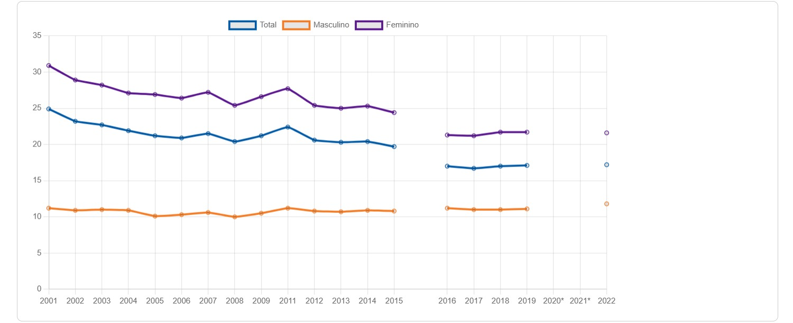
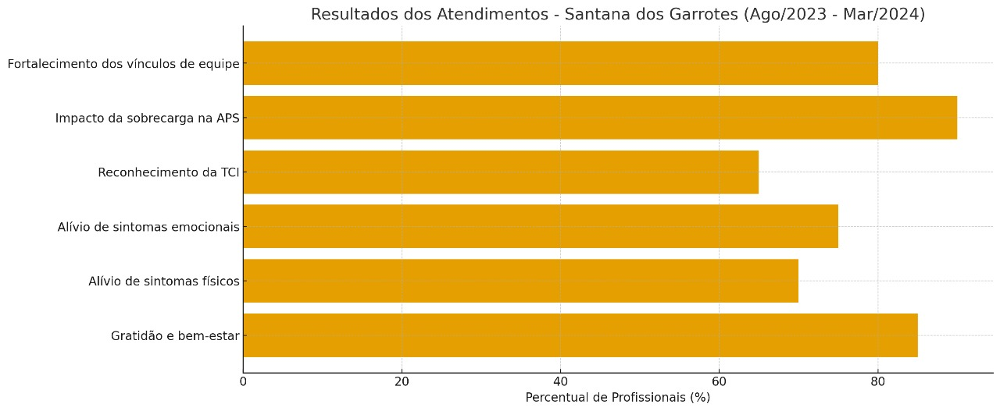
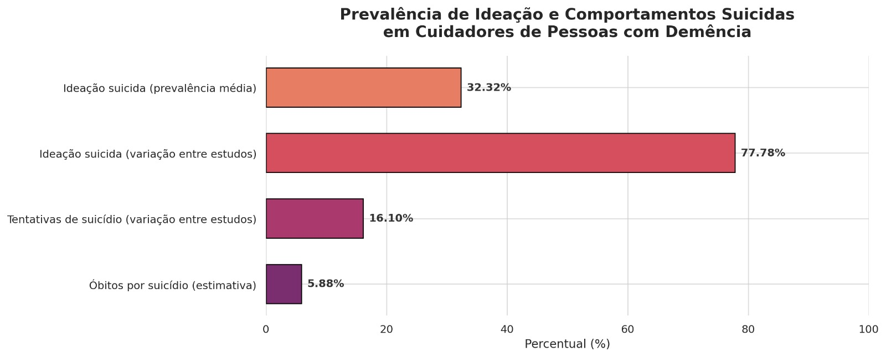

O trabalho de cuidado não remunerado no Brasil

Você já deve ter pensado em como a organização do tempo é fundamental para podermos fazer caber, nas 24 horas de um dia, tudo aquilo que é importante fazermos. Estudar, trabalhar, encontrar pessoas de quem gostamos, cuidar. Mas você já parou para pensar quanto tempo mulheres e homens dedicam ao trabalho de cuidar da casa, de crianças, de pessoas doentes, com deficiência ou idosas? Será que há diferenças? É isso que o indicador acima permite conhecer: a média de horas semanais que mulheres e homens de 16 anos ou mais de idade dedicam ao trabalho doméstico e de cuidados não remunerado.
É essencial considerar também a relação entre gênero e raça na análise dessas desigualdades. Em 2022, mulheres negras dedicaram cerca de 21 horas semanais ao trabalho doméstico e de cuidados não remunerado, enquanto mulheres brancas destinaram, em média, 19,5 horas por semana (PNADC, 2022). No fim de um ano, essa diferença representa aproximadamente 72,8 horas a mais, o que equivale a mais de uma semana e meia de trabalho extra, considerando uma jornada legal de 44 horas semanais. Quando comparadas aos homens brancos, as mulheres negras trabalharam cerca de 505 horas adicionais — o que corresponde a quase onze semanas e meia de trabalho a mais (PNADC, 2022).

Entre agosto de 2023 e março de 2024, foram realizados 162 atendimentos voltados aos profissionais de saúde das Equipes de Saúde da Família do município de Santana dos Garrotes (PB).
Os dados revelam resultados significativos:
A maioria dos participantes relatou sensação de gratidão, bem-estar e alívio de sintomas físicos (como dores) e emocionais (como ansiedade e tensão).
A Auriculoterapia já era uma prática conhecida entre os profissionais, mas a Terapia Comunitária Integrativa (TCI) passou a ser reconhecida após os atendimentos como eficaz, acessível e de baixo custo, sem necessidade de equipamentos.
As análises mostram também que os problemas estruturais da Atenção Primária à Saúde (APS) têm impactado diretamente o bem-estar dos trabalhadores. A sobrecarga e o modelo biomédico tradicional contribuem para adoecimento físico e mental, com sintomas que vão desde cansaço e ansiedade até doenças psíquicas e cardiovasculares.
O projeto demonstrou que, ao incluir práticas integrativas e de autocuidado, é possível melhorar a saúde emocional dos profissionais, fortalecer os vínculos dentro das equipes e, como consequência, ampliar o cuidado aos próprios usuários das UBSs.

Ao analisar e reunir estudos sobre a presença de ideação suicida, tentativas e casos de suicídio entre cuidadores de pessoas com demência, a pesquisa busca preencher a falta de dados sobre esse tema e, com isso, fornecer informações que possam ajudar na criação de políticas e intervenções voltadas ao bem-estar físico e mental desses cuidadores. Entre os 194 artigos, oito compreendendo 1.209 cuidadores informais de pessoas com demência (idade média: 63,9 anos, 74% do sexo feminino) foram incluídos. A prevalência de ideação suicida foi de 32,32% (IC 95%: 16,01-48,64%; Eu2 = 98,5%, p < 0,0001). A prevalência de ideação suicida variou entre os estudos de 4,69% a 77,78%. Dois estudos relataram a taxa de tentativa de suicídio em cuidadores de pacientes com demência, com prevalência variando de 5,9% a 16,1%. Um estudo relatou que um em cada 17 cuidadores de pacientes com demência morreu por suicídio.